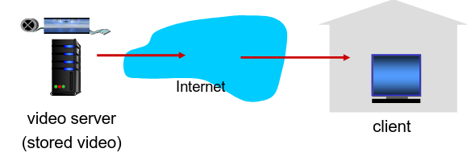
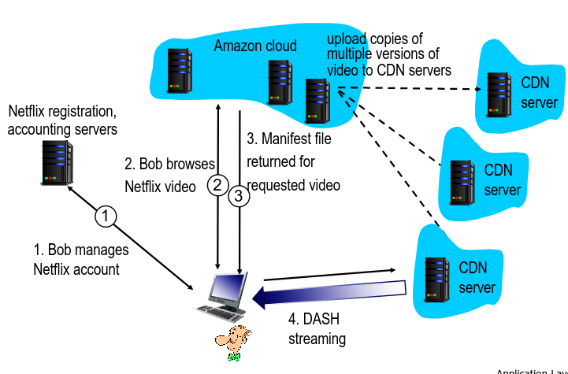

Distribuição de Ficheiros em P2P e Streaming
| Característica | Client-Server | P2P |
|---|---|---|
| Foco | Troca de Dados | Conetividade, Comunicação |
| Transmissão de dados | Servidor providencia todos os serviços | Peers são server e cliente |
| Custo | Mais caro para manter | Mais barato |
| Gestão | Mais simples | Mais complexa |
| Performance | Mais robusta, pode ser expandida | Performance pode diminuir para um grande número de nós |
| Distribuição de Largura de Banda | Depende, sobretudo, da conexão do servidor à Internet | Não é pré-alocada. Depende dos recursos de cada par |
| Segurança | Servidor único, mais seguro | Segurança depende de cada peer em si |
Distribuição de Ficheiros em P2P: BitTorrent
- Ficheiro dividido em pedaços (chunks) de 256kbs;
- Os peers no torrent enviam e recebem pedaçõs do ficheiro.
- Cada um ds peers mantém uma lista do seu top 4 de outros peers para receber novos chunks.
- Esta lista é atualizada a cada 10 segundos.
- Cada um ds peers mantém uma lista do seu top 4 de outros peers para receber novos chunks.
- Dá-se o nome de tracker ao servidor de indexação.
- Peer a juntar-se ao torrent:
- Não tem chunks, mas irá acumulá-los ao logo do tempo com os outros peers;
- Enquanto faz o download, o peer irá dar upload de chunks para outros peers.
- O peer poderá provocar alterações num outro peer com quem efetue trocas;
- churn: medida de desempenho \( \rightarrow \) quantidade de utilizadores que abandonam o produto sem ter o ficheiro completo;
- Quando um peer já tem o ficheiro completo poderá sair da rede ou manter-se no torrent.
Pedir e Enviar chunks
Pedir
- Num dado intervalo de tempo, diferentes peers têm diferentes conjuntos de chunks;
- Periódicamente, o cliente irá pedir aos peers a lista com os chunks que este contém.
- O cliente irá pedir chunks em falta so clientes, geralmente, não o primeiro.
Envio de chunks: tit-for-tat
- Cliente que pediu os chunks irá enviar chunks aos 4 peers que lhe estão a enviar com uma maior taxa;
- Os restantes estão a ser choked por esse cliente (não recebem chunks desse cliente).
- A cada 30 segundos esse cliente irá escolher de forma aleatória outro peer e começará a enviar-lhe chunks.
- A este processo diz-se que o cliente está a fazer optimistically unchoke do peer;
- Este peer poderá juntar-se ao top 4 do cliente.
Streaming de Vídeo e CDNs
Grande parte do tráfego da rede é, hoje em dia, devido a vídeo. Assim, surgem diversos desafios:
Escala: Como é que podemos alcançar cerca de 2B de clientes?
- Um único servidor gigante não iria funcionar.
Heterogeniedade:
- Utilizadores diferentes podem ter capacidades diferentes (cabelada vs mobile, boa largura de banda vs baixa largura de banda).
Para estes problemas existe a solução de tornar estas aplicações distribuídas e colocá-las ao nível da infraestutura da camada web.
Multimédia: Vídeo
- Imagem digitais: array de píxeis;
- Cada píxel é representado por bits.
- Deve utilizar-se redundância com e entre imagens para diminuir o número de bits utilizados para codificar a imagem.
- Espacial (na imagem);
- Temporal (entre imagens).
- CBR (constant bit rate):
- Encoding rate do vídeo fixo;
- VBR (variable bit rate):
- Encoding rate do vídeo altera de acordo com a redundância espacial e temporal.
Streaming de um vídeo armazenado

Principais Desafios:
- Largura de banda entre o cliente e o servidor irá variar consoante os níveis de congestão na rede;
- Perda de pacotes, delay devido à congestão irá provocar um delay no vídeo ou uma má qaulidade de vídeo.
Streaming de multimédia: DASH
- DASH: Dynamic, Adaptive Streaming over HTTP
- Servidor:
- Divide o ficheiro do vídeo em múltiplos chunks;
- Cada chunk é armazenado e codificado com rates diferentes;
- Ficheiro de MANIFEST: providencia URLs para chunks diferentes.
- Cliente:
- Periódicamente mede a largura de banda entre o servidor e o cliente;
- Consulta o MANIFEST e pede um chunk de cada vez.
- Escolhe o máximo de coding rate sustentável na largura de banda atual;
- Pode escolher diferentes coding rates em diferentes períodos de tempo (depende da largura de banda naquele momento),
- Coloca a "inteligência" no cliente, visto que este determina:
- quando pedir chunks (de forma a evitar starvation ou overflow);
- qual o encoding rate a pedir (melhor qualidade quando tem maior largura de banda disponível);
- onde pedir o chunk (pode pedir ao servidor URL que se encontra mais perto do cliente ou tem uma grande largura de banda disponível).
Content Distribution Networks (CDNs)
- Desafio: Como efetuar a stream de conteúdo (selecionado de milhões de vídeos) para centenas de milhares de utilizadores em simultâneo=
- Opção 1: Mega Servidor largo e singular.
- Ponto único de falha;
- Ponto de congestão de rede;
- Grande distância até aos clientes;
- Múltiplas cópias do vídeo enviadas através do link de saída;
- Basicamente, esta solução não é escalável.
- Opção 2: Armazena/Serve múltiplas cópias de vídeos em múltiplos sítios distribuídos geograficamente.
- enter deep: coloca os servidores CDN em múltiplas redes de acesso.
- próxima dos utilizadores (tentativa de single hop);
- utilizada pelo Akamai.
- bring home: menor número de grandes clusters em POPs próximos das redes de acesso.
- utilizada pelo Limelight.
- enter deep: coloca os servidores CDN em múltiplas redes de acesso.
- Opção 1: Mega Servidor largo e singular.
- Guarda cópias do conteúdo em nodos CDN;
- Utilizador pede o conteúdo ao CDN.
- Direcionado para a cópia mais próxima, recebe o conteúdo dessa fonte;
- Pode escolher diferentes cópias se a rede estiver congestionada.
- Desafios: lidar com a rede congestionada.
- A qual nodo CDN se deve ir buscar o conteúdo?
- Qual o comportamento do viewer em casos de congestão?
- O que colocar em cada nodo CDN? A que rate?
Caso de Estudo: Netflix
